Designing Buildings: The Energy Part
By Charles Xie ✉
Listen to a podcast about this article
Aladdin can be used to design buildings with a variety of architecture styles. In this article, we will walk you through various architectural, material, human, and environmental factors that affect the energy use of a building. According to the U.S. Energy Information Administration, heating and cooling of homes make up more than 65% of residential energy use in the United States. So the energy efficiency of a residential building is largely about its thermal efficiency. The International Energy Conservation Code (IECC 2021) recommends building energy efficiency standards for different regions around the world. To understand the IECC code, you will need to learn the science and engineering concepts behind it.
Under each circumstance, we will compare the energy uses of two houses that are identical to each other in every aspect except the control variable. In this way, the difference in energy use can be attributed solely to the control variable.
Building envelope vs. thermal envelope
The energy used to heat and cool a building is determined by its thermal envelope (which includes solar heat gains through window glazing). A thermal envelope is part of the building envelope — all of the elements of the outer shell of a building that maintain a comfortable indoor environment for its occupants. Not all elements of the building envelope are considered as part of the thermal envelope. For example, a roof may not be considered as part of the building envelope if the insulation is installed above the ceiling, instead of being underneath the roof itself. The following image illustrates the difference in energy use between a house with an insulated ceiling and another without. All the other properties of the two houses are exactly the same. As you can see, the heat fluxes from the roof of the house without an insulated ceiling are greater than those from the roof of the other house.
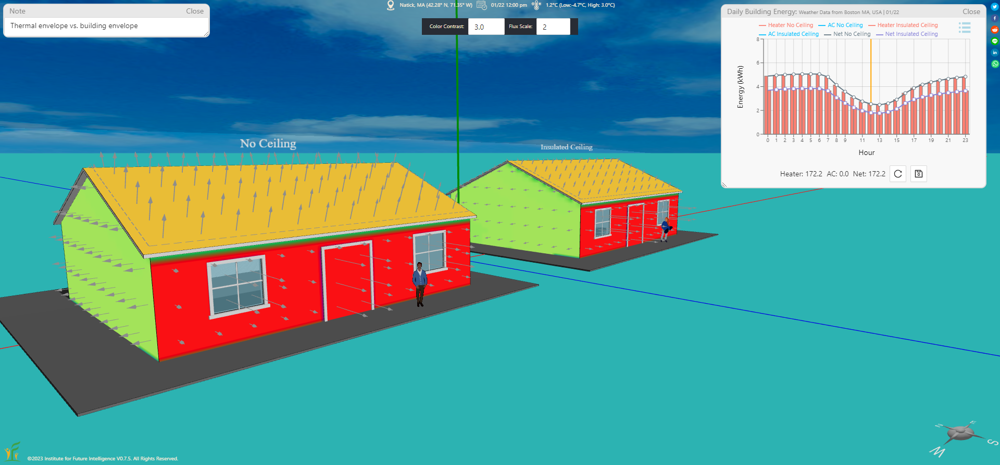
An insulated ceiling reduces the thermal envelope and improves energy efficiency
Click HERE to view and edit the above model
Architectural design can also affect the thermal envelope significantly. The following screenshot shows a comparison between two houses that have seemingly similar building envelopes, but one has a larger thermal envelope than the other (because the latter is surrounded by open porches that are not part of the thermal envelope).
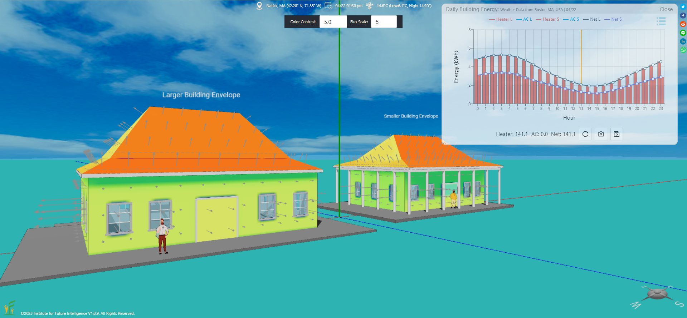
Building envelope vs. thermal envelope
Click HERE to view and edit the above model
The effect of the building size
The energy that a building consumes depends on its size. A larger building has a larger interface for heat exchange between inside and outside. It also has a larger volume of air that needs to be heated or cooled to maintain indoor thermal comfort. The following model shows the comparison of energy consumption between a large building and a small one in Massachusetts on June 10.
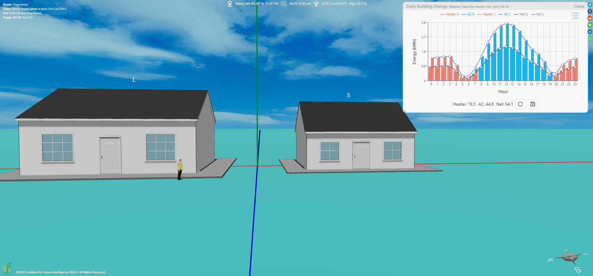
Click HERE to view and edit the above model
The effect of the building orientation
A building receives solar energy throughout a day when the sun shines. As the sun's angle changes from sunrise to sunset, the solar energy that projects on the surfaces of the elements on the building envelope varies from time to time. A building may get much more solar energy through a unit area of its windows than through a unit area of its walls and roofs. This is because windows transfer heat to the inside through direct thermal radiation, but walls and roofs transfer heat to the inside through thermal conduction after their exterior surfaces are heated by direct thermal radiation (hence only a small portion of radiation energy that is converted into thermal energy can be passed to the inside). The orientation of a building may make a difference in terms of its hourly solar heat gains during a day if there are unequal window areas on the walls facing different directions.
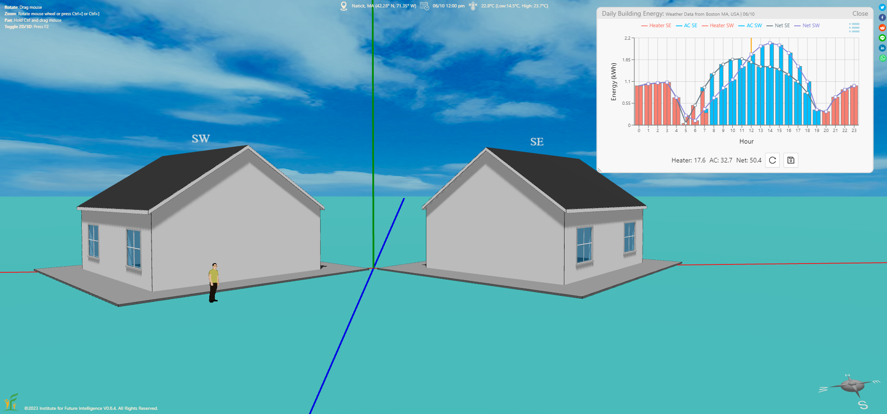
Click HERE to view and edit the above model
The effect of the building insulation
A well-insulated building consumes less energy than a poorly-insulated one. This applies to both heating and cooling, as thermal insulation slows down heat flow, regardless of its direction. The insulation property of a wall or roof is set by its R-value, whereas that of a window or door is set by its U-value (the inverse of the R-value), as per the convention in the United States.
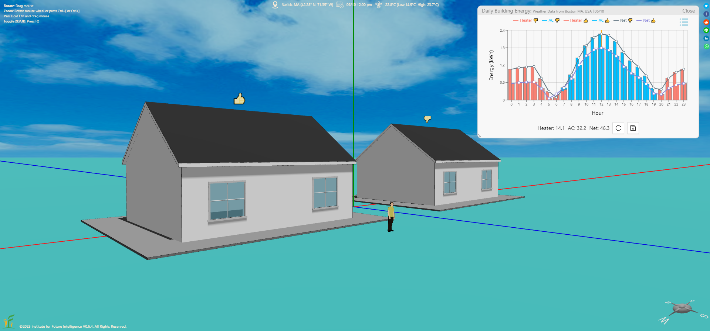
Click HERE to view and edit the above model
The effect of the airtightness
Building airtightness measures the rate of unintentional air exchange with the outside environment through the building envelope. In Aladdin, you can set air permeability for walls, roofs, windows, and doors. A higher air permeability of a building element results in higher use of energy in both heating and cooling.
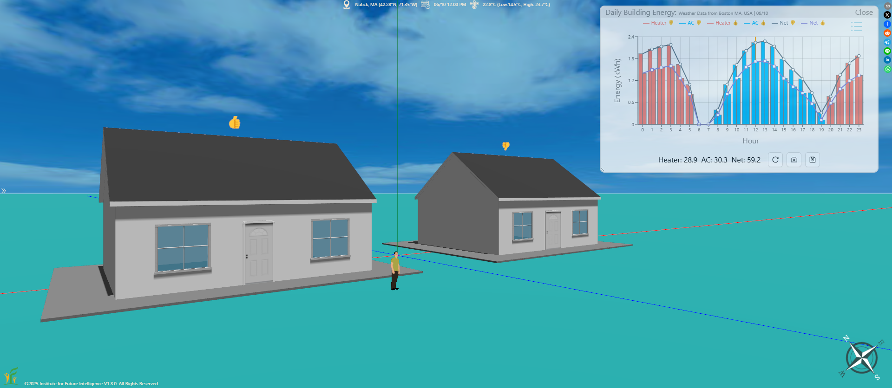
Click HERE to view and edit the above model
The effect of the roof color
A roof that reflects more sunlight (hence absorbs less solar energy) can save cooling energy in the summer. This is the idea behind the concept of cool roofs. The following model compares the energy use between a house with a dark-colored roof and a house with a light-colored roof. All the other properties of the two houses are identical.
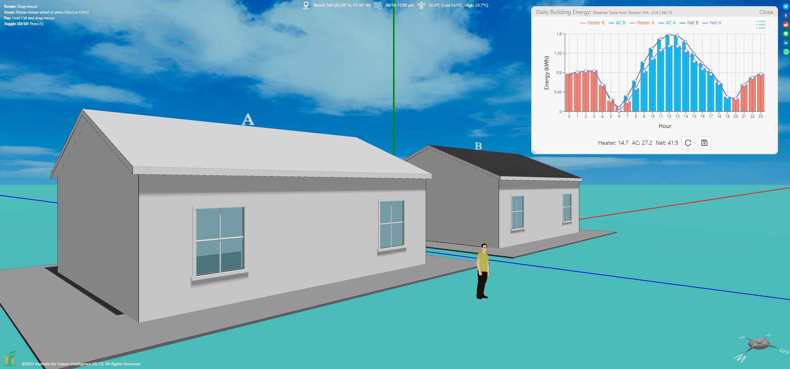
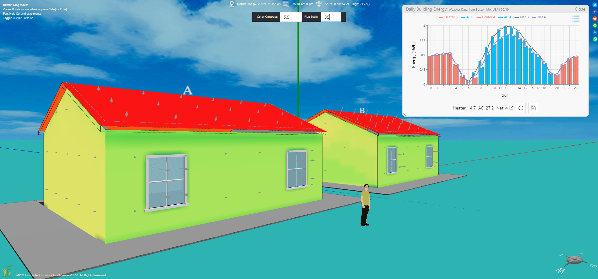
Click HERE to view and edit the above model
The effect of the eaves overhang
Eaves can provide shading for the windows, walls, and doors under them in the summer to reduce the energy needed to cool the building. The following model compares the energy use between a house with a longer eaves overhang above its south-facing wall and a house with a shorter eaves overhang. All the other properties of the two houses are identical.
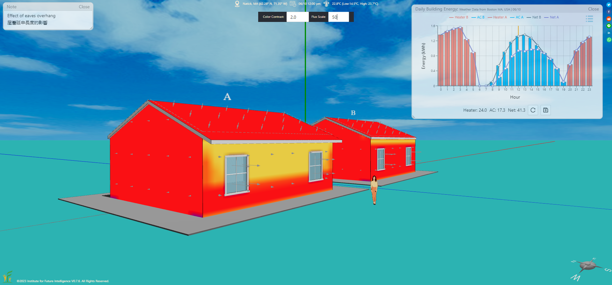
Click HERE to view and edit the above model
The effect of the solar heat gain coefficients of windows
The solar heat gain coefficient (SHGC) of a window determines the portion of solar energy that is allowed to go through it. The following model compares the energy use between a house with windows that have a higher SHGC (0.65) and a house with windows that have a lower SGHC (0.35). All the other properties of the two houses are identical.
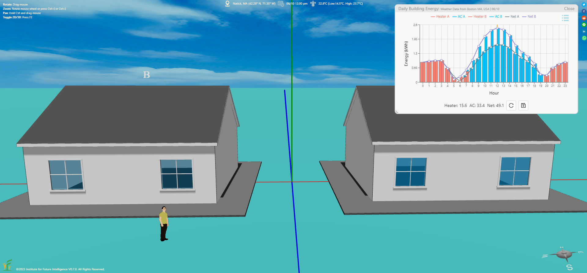
Click HERE to view and edit the above model
The effect of the thermostat setpoint
The energy consumed by a building is also affected by the temperature inside it set by the occupants (different people have different thermal comfort zones). This model compares the energy use of two houses with two different thermostat setpoints on a late spring day in Massachusetts — a season that some people may think is warm while others may think is still cold. All the other properties of the two houses are identical.
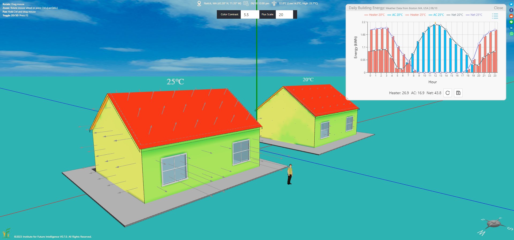
Click HERE to view and edit the above model
The effect of a programmable thermostat
A programmable thermostat allows users to set temperatures for different periods of a day based on their schedules and preferences. This model compares the energy use of two houses with a programmable thermostat and a fixed-temperature thermostat on a winter day in Massachusetts. All the other properties of the two houses are identical.
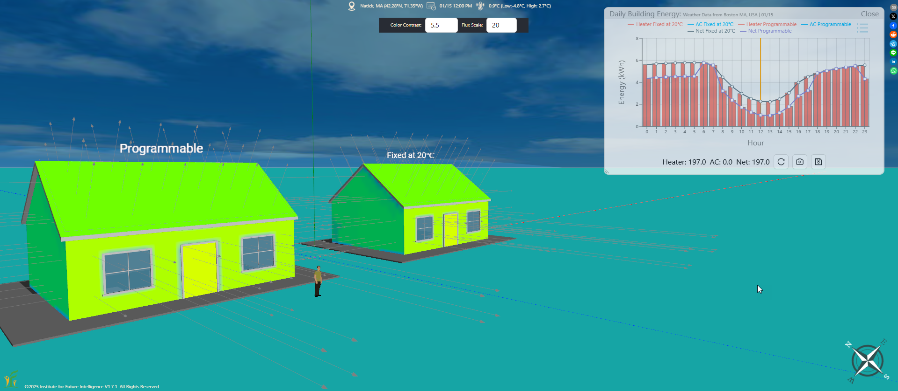
Click HERE to view and edit the above model
The effect of solar panels
Solar panels can generate electricity on-site to offset the energy use of a building. This model compares the energy use of two identical houses, one with an array of rooftop solar panels and the other without.
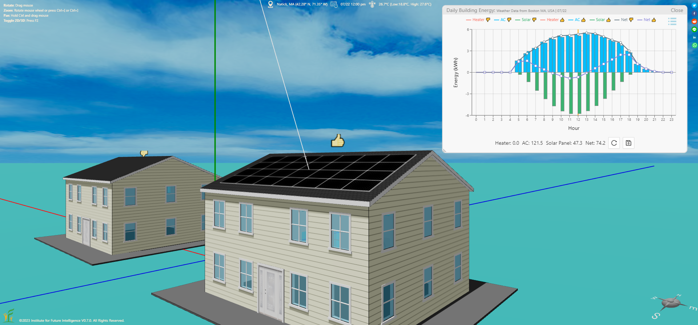
Click HERE to view and edit the above model
The effect of the ground temperature
The temperature of the ground varies with the depth. The deeper, the larger it differs from the air temperature. In the summer, this temperature difference may help reduce the cooling energy. In the winter, it may help reduce the heating energy. This model compares the energy use of two identical houses, one with an insulated floor and the other without.
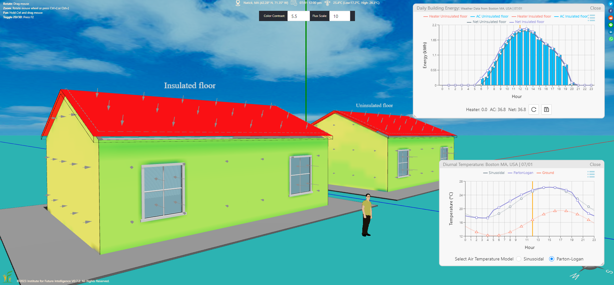
Click HERE to view and edit the above model
The effect of trees
Trees can provide shading that reduces cooling energy in the summer. This model compares the energy use of two identical houses, one with a tree near it and the other without.
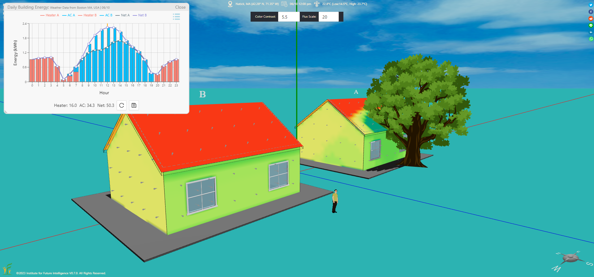
Click HERE to view and edit the above model
Summary
This article walks you through many factors of a building that affect its energy use. Desiging an energy-efficient building requires the designer to develop a basic understanding of all these concepts in order to make scientific decisions when considering trade-offs.
Note
We mainly analyze simple buildings in this article. A simple building is defined as one that has no intersecting substructures (substructures are usually created on different foundations in Aladdin) on its envelope. The analysis of complex buildings involves more work and is detailed in a different article.
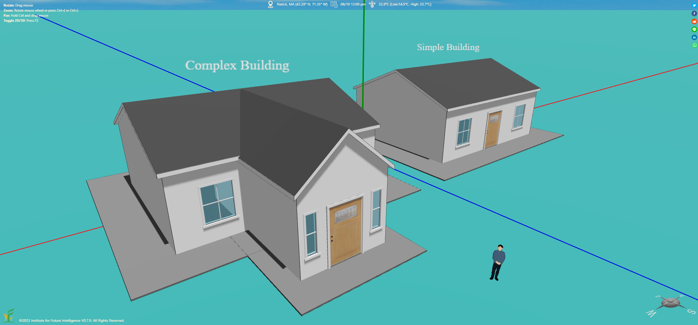
A simple building vs. a complex building